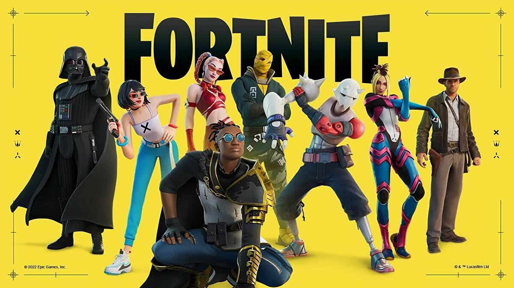
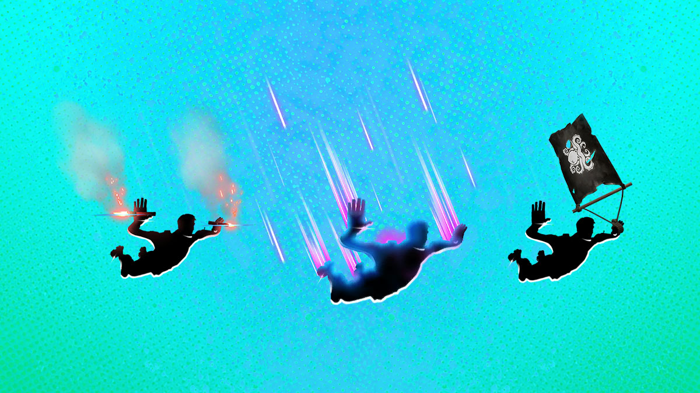
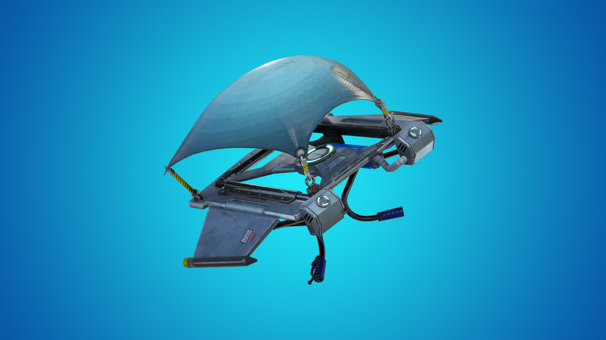
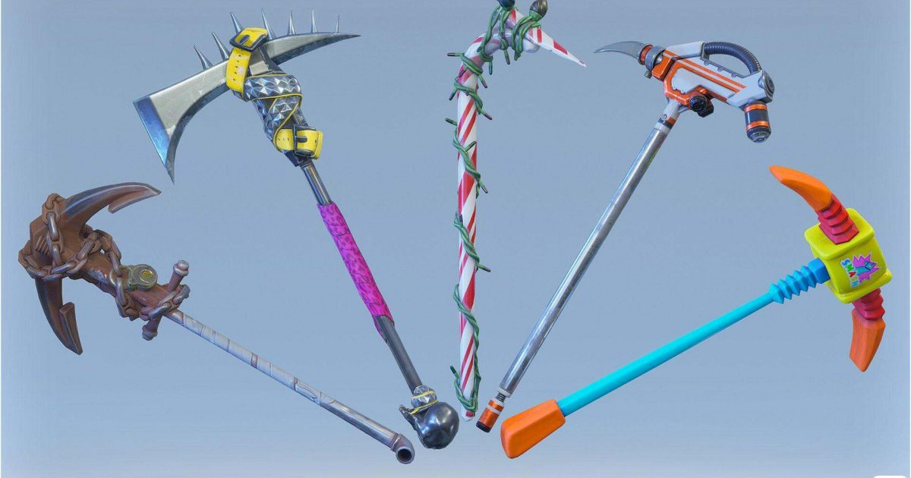

What is Fortnite?
About
Fortnite is an online video game developed by Epic Games. It is available on iOS, Android, PlayStation 4/5, Xbox One/Series X, Nintendo Switch, and Windows PC. It has 3 different versions to play on: Save the World, 100 PvP Battle Royale, and Creative. Since the start of 2022, Fortnite has had an average of 24 million players logging onto the game, and 268-272 million players each month. The Chapter 3 map has 14 locations, including Tilted Towers, Condo Canyon, The Daily Bugle, Greasy Grove, Rocky Reels, Camp Cuddle, The Joneses, and more. You can talk to most npc's in the game to complete challenges, get guns, or take advantages in your match. The recommended age to play Fortnite is 12/13+, but really, anyone can play it.
Save the World
Fortnite was created in 2017 by Epic Games. Before this, in 2011, it began from an internal game jam following the publishing of Gears of War 3. Even though it wasn't initially one of the developed titles during the jam, the concept of merging construction games like Minecraft and Terraria, and shooter games, lead to the creating of Fortnite. The developement slowed due to multiple issues, like switching from Unreal Engine 3 to Unreal Engine 4, a role-playing game approach to enhance the life of a game. Epic was looking to get into the games as a service model, and brought in Chinese publisher Tencent to help. He took a large stake in Epic as part of this, leading to the departure of several executives, including Cliff Bleszinski, who had been a key part of Fortnite's development. Fortnite's approach was changed to be Epic's testbed for games as a service, and further slowed the development.
Battle Royale
Around the same time Epic release Fortnite as early access, PubG had become a worldwide sensation, as it sold over 5 million copies 3 months after its release in March 2017. By September of 2017, Epic was ready to release this as a second mode from Save the World in the earlier access, but then decided to release it as a free game, Fortnite Battle Royale, available on Xbox One, PlayStation 4, and Windows PC. This quickly gained popularity, with over 10 million players during the first 2 weeks of its release, and leading Epic to create separate teams to continue the developement apart from Save the world, outside of common engine elements and art assets. This allowed Battle Royale to expand to other platforms that Save the World wasn't supported on, including iOS, Android, and the Nintendo Switch.
Creative
A new, creative sandbox mode of Fortnite launched on December 6, 2018, in sync with the start of season 7 of Battle Royale. Each player would have access to their own private, isolated island on which they could create buildings and add as much objects as desired. They would be able to invite their friends to this island and participate in unofficial games like race tracks or jumping courses. Originally, only players who had the Fortnite Battle Pass could recieve their own island, even though players who didn't have the Battle Pass recieved access to Creative for free on December 13.
What are the controls?

Platforms
Fortnite is available on 9 platforms: iOS, Android, Nintendo Switch, Xbox One, Xbox Series X/S, PlayStation 4/5, and Windows PC. All of these platforms however, have different ways of playing Fortnite.
Playstation 4 and 5
The PS4 was released on November 15, 2013. It was one of the original platforms of Fortnite when Fortnite first came out, aside from the Xbox One and Windows PC. The PS5 was released about 7 years later on November 12, 2020. Both PlayStations support Fortnite Battle Royale and Save the World. The controlls aren't different at all. If you don't change the controls, the X button will have you jump, the square will reload a gun if you have one, as well as allow you to interact with different stuff, the O will allow you to toggle build mode, and the triangle allows you to switch from your pickaxe to the item you last held and vice versa. The 2 joysticks allow to steer and walk (obviously), the middle pad toggles the mini map, and the options button on the right of the pad toggles the menu. On the D-pad, up toggles your backpack, left toggles the ping, down toggles your emote wheele, and right doesn't really have a purpose. R2 is the trigger, it allows you to either bludgeon someone with your pickaxe, or to shoot at someone with a gun you might be holding, R1 and L1 allow you to switch to a different weapon, and L2 allows you to aim with the weapon you might be holding. With building, O allows you to switch back to gun mode, X allows you to jump as usual, square allows you to place a trap if you have one, and triangle doesn't have a purpose. R1 has you place a floor piece, L1 has you place a roof piece, L2 has you place stairs, and R2 has you place a wall piece. If you hold O, you go into edit mode. In edit mode, R2 allows you to select a square to edit your build, and X would allow you to confirm it. On the D-pad, down allows you to emote like usual, left toggles the ping like usual as well, up toggles the backpack like usual also, and right allows you to switch to the material or trap you want.
Xbox One and Xbox Series X/S
Like the PS4, the Xbox One was released in November of 2013. It was also one of the original platforms for Fortnite when it first came out. The Xbox Series X and S were both released about 7 years after the Xbox One on November 10, 2020. Like the PlayStations, the Xboxes all support Fortnite Save the World and Battle Royale. The controls aren't as different as well. Without getting changed, A allows you to jump, X allows you to reload your gun if you were using one, as well as allow you to interact with different stuff, Y allows you to switch from your pickaxe to the last item you used and vice versa, and B toggles build mode. Obviously the 2 joysticks allow you to steer and move, the view button toggles the mini map, and the menu button toggles the menu. On the D-pad, up toggles your backpack, left toggles the ping, down toggles your emote wheele, and right doesn't really have a purpose. The right trigger allows you to either bludgeon someone with your pickaxe, or to shoot at someone with a gun you might me holding, the left and right bumpers allow you to switch to a different weapon, and the left trigger allows you to aim with the weapon you might be holding. With building, B allows you to switch back to gun mode, A allows you to jump as usual, X allows you to place a trap if you have one, and Y doesn't have any purposes. The right bumper has you place a floor piece, the left bumper has you place a roof piece, the left trigger has you place stairs, and the right trigger has you place a wall piece. If you hold B, you'll go into edit mode. In edit mode, the right trigger allows you to select a square to edit your build, and A would allow you to confirm the edit. On the D-pad, down allows you to emote like usual, left toggles the ping like usual as well, up toggles the backpack like usual also, and right allows you to switch to the material or trap you want.
Nintendo Switch
The Nintendo Switch was released on March 13, 2017, a few months before the release of Fortnite. Unlike the Xboxes and the PlayStations, this wasn't an original console that supported Fortnite. Even though Fortnite Battle Royale is now supported on it, Save the World is still not. The controlls are kind of similar, except the a&b are switched as well as the x&y. Unlike the other consoles, the Nintendo Switch uses a normal controller, and something called JoyCon. The defaults come in red and blue, but you can get other colors if you want to. On the right JoyCon, B allows you to jump, Y allows you to reload the gun(s) you might have been using; Y also allows you to interact with different stuff, X allows you to switch from your pickaxe to the last item you used and vice versa, and A toggles build mode. The joysticks on both JoyCons obviously allow you to steer and move, - toggles the mini map, and + toggles the menu. On the D-pad on the left JoyCon, up toggles your inventory, left toggles the ping, down toggles your emote wheele, and right doesn't really have a purpose. ZR allows you to either bludgeon someone with your pickaxe, or shoot at someone with the gun you might be holding, L and R both allow you to switch to the weapon of your desire, and ZL allows you to aim with the weapon you're using. With building, A allows you to switch back to gun mode, B allows you to jump like usual, Y allows you to place a trap if you have any, and X isn't very useful. R has you place a floor piece, L has you place a roof piece, ZL has you place stairs, and ZR has you place a wall piece. If you hold A, you'll go into edit mode. In edit mode, ZR allows you to select a square to edit your build, and B would allow you to confirm it. On the D-pad on the left JoyCon, down allows you to emote like usual, left toggles the ping like usual as well, up toggles the backpack like usual also, and right allows you to switch to the material or trap you want.
Windows PC
Fortnite on a Windows PC is different from other platforms. Instead of an automatic controller, you use a mouse and a keyboard. It was an original platform you could play Fortnite on when it first came out like the Xbox One and PS4. Unlike consoles, PCs use graphics cards, like the RTX 3070. As you'd expect, the controls in Fortnite are different. The W key moves you forward, A moves you left, S moves you backwards, and D moves you right. Space has you jump, R has you reload the gun you might have been using, E lets you interact with many items, F has you switch from your pickaxe to the last item you used and vice versa, and Q toggles build mode. You use the mouse to steer, M toggles the mini map, and Escape (esc) toggles the menu. I toggles your inventory, a press of the mouse's scroll wheele toggles the ping, and B toggles the emote wheele. The left mouse button allows you to bludgeon someone with your pickaxe or to shoot them with the gun you were using, the right button allows you to aim the gun if you're holding one, and you can switch the weapon you want by the key binds of scrolling up or down the mouse wheele. With building, F allows you to switch back to gun mode, space allows you to jump like usual, and T allows you to place a trap. Z has you place a wall piece, X a floor piece, C stairs, and V a roof. If you press G, you go into edit mode. In edit mode, you use the left mouse button to select each square on the edit grid, and press G to confirm it. The right mouse button allows you to switch to any material you want.
iOS/Android
Last but not least, there are the phones/tablets. Fortnite can also be played on phones that run on iOS or Android. It became available on iOS in April 2018 and Android June 2018. However, in Spring 2020, Apple removed Fortnite from the App Store because Fortnite started a discount on Vbucks, which was against a contract or something. Now, with Xbox Cloudgaming, you can play Fortnite on iOS again, as long as the internet connection is stable. Unlike the other platforms, iOS and Android use touch screen to play. There are buttons on the screen for anything or everything; from the inventory, building, editing, menu, map, slots, triggering, aiming, and even steering and moving. Once you get how to do it, you'll become pretty good.
How do you play?
How to Play
When you start playing Fortnite, it's kind of hard; but once you learn how to play it, it becomes easy as pie. To start a game, press start (mobile), triangle (Playstation), Y (Xbox), X (Nintendo), or press start with the mouse (Windows PC). Once you're in the game, you will most likely be in a pre game lobby, where you can shoot around, dance, emote, and more until you get on the Battle Bus. A few seconds after you board the bus, you will have the option to jump off. BTW, if you want to speak, hold whatever key you have for your mic if you have one on your PC, or use a headset for consoles like the Switch, Xbox One and X/S, and PS4. On mobile, there is a button for the mic, and for a PS5, you can use a headset, or your Dualsense controller has a built-in mic and a mute/unmute button. While skydiving, you can either deploy your glider at that moment, or you can wait until you get close to the ground. Currently as of July 2022, there are many locations to land at, including Greasy Grove, Sleepy Sounds, The Joneses, The Daily Bugle, Command Cavern, and more. Once you land, try to look for materials, guns, items, and chests. Chests are an item in the game that give you items like a gun, the gun's ammo, materials, and an item. Depending on what location you landed at, there will most likely be people at or in it. So if you have nothing, try not to get their attention; or if you have a gun with ammo, you can try to shoot and kill them. A minute into the game, the storm will spawn. Its a giant zone which inside is toxic. If you're in it for at least a second, you'll lose some health. Throughout the match, the storm will proceed to get smaller and more toxic. To avoid the storm, stay or try to get to the eye of the storm. This is a storm free sone in which the only way you'll lose health, is by getting attacked. At the end of the game, when you and one other person are left, try to find them and kill them. If you succeed, you'll win and get a Victory Royale. If it's your first victory of the season, you'll get an umbrella for a glider (it changes every season).
What are Vbucks?
Vbucks
Vbucks are a currency that is used to buy stuff in Fortnite. Depending on what country, 1,000 Vbucks cost (USD) $7.99, 2,800 cost $19.99, 5,000 cost $31.99, and 13,500 cost $79.99. To get Vbucks, you can go to a retail store that will or might have some; like Gamestop, Target, Best Buy, and probably more. You can also get them on the Vbucks page inside Fortnite. One more way is if you have the Battle Pass, you can unlock free Vbucks, or you can get Vbucks that
What are cosmetics?
Cosmetics
Cosmetics are items in Fortnite you can get with the Battle Pass, Crew Pack, or in the Item Shop. They can be skins, backblings, emotes, gliders, and more. Here, I'll give a list of the types of cosmetics and info about them.
-
Skins
Skins are a type of cosmetic in Fortnite. The skin you'll get when you start playing Fortnite is the default skin. The names of default skins are Jonesy, Renegade, Headhunter, Banshee, Ramirez, Spitfire, Hawk, and more. The first real skin to appear in Fortnite was the Renegade Raider. You'd get gifted it if you were one of the original players during the 1st season. You could get it in the Item Shop as well. This skin was last seen in the Item Shop 1197 days ago, and very few people have it to this day. Depending on what rarity, skins can cost 800-2000 Vbucks. They can be in any rarity, from Uncommon (green) to Legendary (gold), icon (light blue skins based on real people), Gaming series (based off of games), and even Star Wars, Marvel, and DC. Skins don't give you an advantage or disadvantage when you're playing Fortnite. They were just made for the looks. Even though you can camouflage with some skins while playing. That's all about skins.
-
Backblings
Backblings are another type of cosmetic in Fortnite. They can be backpacks, wings, pets, and more. The first backblings introduced were Insignia and Penguin. They were given out by Tencent, a company that owns stock in other companies like Epic Games. This was only offered to users in China. Today, backblings most commonly come with sets for a skin, but there are some that you can get individually.
-
Contrails
Contrails are also another type of cosmetic in Fortnite. They are active when you drop out of the Battle Bus. They are colorful trails that you leave behind while skydiving. Some are techno, some are food, some are nature, and more. The rarest contrail in the game is Flames. It was the top contrail from the Battle Pass of Season 3 Chapter 1. That's really all there is to contrails.
-
Gliders
Gliders are another type of cosmetic. Unlike the others, it actually serves the most purpose of them all. Gliders are used to slowly glide to a place mostly after skydiving. They're also used from jumping from high places (only in Team Rumble), launch pads, and vents. Depending on what game mode you're on, gliders can be usefull when you accidentally fall from somewhere. Gliders can look and be flown on like wings, be held from the bottom, surfed on, and there is one where you can walk on like stairs. Every season, if you win your first match, you'll get a glider called "the Umbrella". You'll get the deafault one, and the one for the season. The first glider, "the O.G.", was the default glider for all of chapter 1. It was changed during the start of chapter 2. In November 2020, it was added to the item shop to go with the Royale Originals and Battle Classics bundles in the item shop. For Valentines Day in 2019, a glider called Heartspan was released in the item shop for free.
-
Pickaxes
Pickaxes are cosmetics that are literally axes. They are used for breaking stuff in a game of Fortnite. Depending on what you break, you could get wood, brick, or metal. With these materials, you can build walls, roofs, floors, and stairs. Pickaxes are also used for bludgeoning people. If you don't have a weapon, or if you're in an LTM in which only pickaxes are used for killing people, you can hit people with your pickaxe to kill them. Pickaxes deal 20 damage to a person. Before, there was a glitch with the star wand pickaxe in which it dealt 25 damage instead of 20. It was also able to deal headshot damage (50). The default pickaxe is the first axe you'll get when you start playing Fortnite. Along with the Royale Originals and Battle Classics, there was a Throwback Axe in which you could get for free ($0.00). Besides all of that, there isn't anything else about axes.
What are guns?
Guns
Guns are a type of weapon in Fortnite. They can have a rarity from common (gray) to legendary (gold), and even others, like mythic (sparkly gold), exotic (light blue), and even Star Wars. There are many types of guns; like pistols, assault rifles, sniper rifles, sub-machine guns (SMGs), long machine guns (LMGs), rocket powered guns (RPGs), and shotguns. The most famous shotgun is the pump. Common pumps do 84 damage, have a DPS of 58.8, a fire rate of 0.7, magazine size of 5, reload time of 5.1 seconds, and deals 45 structure damage. While a legendary pump does 116 damage, has a DPS of 81.2, a fire rate of 0.7, a magazine size of 5, reload time of 3.7 seconds, and deals 55 structure damage. The next famous shotgun is the tactical. The common does 72 damage, has a DPS of 108, a fire rate of 1.5, a magazine size of 8, reload time of 6.3 seconds, and deals 50 damage to structures. While a legendary tac deals 88 damage, has a DPS of 132, a fire rate of 1.5, magazing size of 8, a reload time of 5.1 seconds, and deals 79 damage to structures. There are so much more guns to talk about, but I'll add them later.
What items does Fortnite have?
Items
Items are stuff in Fortnite that can be used for health, shield, defence, and more. They are accessed inside a match of Fortnite. One type of item is a shield. There are mini shields and big shields (called shields). Mini shields give you 25 shield each, and big shields give you 50 health each. Mini shields can only give you up to 50 health, unlike big shields. Even if you're on 100 shield though, it won't help towards fall or storm damage. Then there are the health items. There are med mists, med kits, and bandages. Med mists are sprays that give you 5 health each spray. Bandages give you 15 health up to 75, and med kits fully heal you no matter how much health you're at. Then there are items used as weapons. First, grenades are items that blow up 3 seconds after thrown. They do 100 damage and can kill you after 1 or 2 throws. There are other types of grenades as well, like shockwave and impulse. Shockwave grenades send you hundreds of feet forward or backwards without taking fall damage. Impulse grenades are the same, even though they actually can deal fall damage. There are a lot more coountless items in Fortnite that I can't list now. But I will later.
What Is the Battle Pass?
Battle Pass
The Battle Pass is an award system in Fortnite. It costs 950 Vbucks alone. But, if you buy it for 1850 Vbucks, you can get it along with 25 additional levels. In the Battle Pass, there are 10 pages, each representing about 10 levels. In each page, there are 8-10 awards. Each one requires an amout of Battle Stars (5 earned for each level). Awards can be gun wraps, contrails, gliders, backblings, emotes, emoticons, and skins. The Battle Pass has 100 tiers, or levels. The first Battle Pass reward ever in Fortnite was the Blue Squire skin for the Season 2 Battle Pass of Chapter 1. In that same season, however, there were only 70 tiers, and the 70 tier skin was the Black Knight skin. Now, after you get to tier 100, you can get bonus rewards, including banners, emotes, gliders, and even more skin styles. There is also a bonus skin that comes with challenges to get it. That's it about the Battle Pass.
What is the Crew Pack?
Crew Pack
The Crew Pack is another award system in Fortnite. It costs $11.99 USD and €11.99 Euro. Every month, you'd get a set of rewards, including a backbling, pickaxe, glider, and skin, along with styles for the skin. The first Crew Pack was introduced in Chapter 2, Season 5 of December 2020, and was the skin set of Galaxia. This skin had the resemblane of the Brite Bomber skin introduced in the first season of Fortnite. With the Crew Pack, you'd get 1,000 Vbucks every month, and you can get the Battle Pass, along with 25 additional tiers for 950 Vbucks off. Other than that, that's it about the Crew Pack.